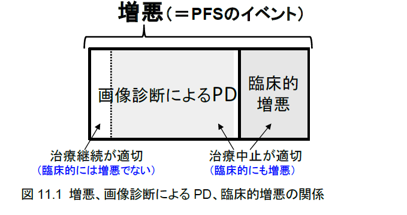
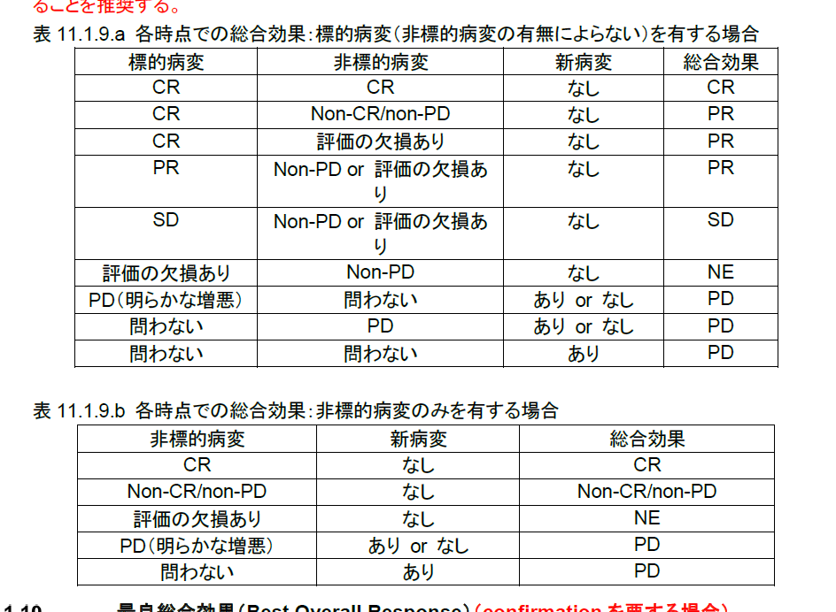

1 ARO協議会に向けた発表資料準備
1.1 タイトル：多職種で、創る～理想（Esttimand）をかたちにするために～
1.2 全体抄録
Estimand は、治療、対象集団、変数、要約指標、中間事象（治療開始後に起こり測定値の存在・解釈に影響する事象）の取り扱い、という5つの要素で関心のある治療効果を明確に設定する枠組みです。従来の PICO ではレスキュー治療の開始など中間事象を治療の一部と見なし、治療効果を評価することが一般的でした。これに対し Estimand の枠組みで中間事象の取り扱いを試験計画時に整理することで、例えば「ある中間事象が起こらなかった場合の治療効果」という特定の臨床的問いに対応した治療効果を検証する試験の計画が可能です。この枠組みを試験に実装するには、医師、CRC、PM/StM、DM、MOなど多職種の協働が不可欠です。試験目的に沿った Estimand を定めるには、まず関心のある治療条件を整理し、関係者間で認識を共有します。続いて、合意した Estimand に基づき、当該治療効果の推定に必要なデータの収集可否と方法を多職種で検討します。こうした議論を行うことで収集項目の優先順位が明確になり、重要なデータが適切に収集され、試験の品質向上に繋がります。本発表では、Estimand が変わるとデータ収集戦略がどのように変化するか事例を通じて検討します。
1.3 JCOGプロトコールマニュアルに基づいて、抗がん剤試験における試験デザインをまとめる。
1.4 Population
試験の対象集団を規定する上でのstage や疾患の程度・拡がりを診断する規準を記載する。
原則として、患者選択（適格規準）や割付調整因子、治療前評価項目に関係する規準や定義が該当する。
適格規準と除外規準に分けて、選択規準を規定する。 試験の結果、治療法の有効性が示された場合にその治療を適用することが妥当とみなせる対象集団を規定するものが適格規準（inclusion criteria）であり、外的妥当性（external validity）すなわち一般化可能性 （generalizability）に関連する。一方、適格規準で示される対象集団には属するが、治療のリスクが高いために試験に組み入れることが倫理的でないか（倫理的側面）、試験で必要な有効性・安全性の評価に影響を及ぼすと判断される対象を除外 する（科学的側面）条件を規定するものが除外規準（exclusion criteria）であり、科学的側面としては内的妥当 性（internal validity）すなわち比較可能性（comparability）に関係する
狭すぎる選択規準の試験結果は特定の患者集団にしか適用できないものとなる（一般化可能性が低い）し、 逆に広すぎると治療効果が期待できない患者が多く含まれることとなって治療効果の差が薄まってしまう（内的妥当性が低い）。試験の目的である治療効果の評価に適切な集団を選択する適格規準を設定しなければ ならない
一般化可能性/外的妥当性について、「特定の施設に限って試験を行った場合、その結果は日本全体には外挿できないことから標準治療とは言えないのではないか」といった質問を受けることがある。例えば、手術手技の試験において、技術認定を受けた外科医に術者を限るといった場合が挙げられる。こうした制限を設けることは、まだ一般には普及していない難度の高い新しい技術を要する実験的治療に伴う患者リスクを最小化するという倫理的側面が第一義であるが、その新しい技術が有効性で真に優れたものである時に、技術が未熟な術者が加わることでその技術の真の有効性が正しく評価されないという科学的側面（比較可能性/内的妥当性）もある。
1.5 Intervention（治療計画と治療変更基準）
プロトコール治療
試験で評価する「プロトコール治療」の定義と全体像を説明した上で、個々の治療内容を群別（比較試験の場合）・モダリティ別に詳述する。比較試験では群別の記載を基本とし、放射線治療や手術等、群で共通の治療がある場合には「両群共通」として記載してもよい。
特に複数のレジメンや複数のモダリティによる治療レジメンの場合、「プロトコール治療」の定義を明確に行う。 後治療との区別も明確に定義する。
複数コースからなる治療レジメンの場合、何コースをもって「プロトコール治療完了」とするかを明記する。
効果や毒性などによってコース数や次に進むレジメンが異なるような場合は、その判断規準を明確に示す。 登録後に治療を開始するまでの期間の上限を規定する。入院治療の場合は「登録後7 日以内」（登録日の翌 週の同じ曜日まで）、外来治療の場合は「登録後14 日以内」を原則とする。ただし、手術や放射線治療がプロ トコール治療に含まれる場合は、手術室予約や放射線治療計画に時間を要するため、「登録後21 日以内」 や「登録後28 日以内」なども許容される。
原則として「コース開始規準」は第2 コース以降に適用し、第1コースの開始に際してはコース開始規準や適格規準は適用しない。
「登録時に適格規準を満たしたが治療開始前に検査値が適格規準を満たさなくなった」という場合、治療を開始してもプロトコール逸脱/違反とはならない。そのため、登録後の治療開始までの期間は十分に短く決める 必要がある。十分短く設定しても、治療開始前に臓器機能の検査値が悪化して担当医判断により治療を開始 せず「プロトコール治療中止」となる場合もあり得るが、それが頻発するようなら適格規準を再検討する必要がある（ごく少数例生じるのは問題とならない）。なおSouthwest Oncology Group（SWOG）においては、「登録当日または登録翌日」に治療を開始しなければならないとしている。つまり治療開始予定日が登録当日か翌日でないと登録ができない。
プロトコール治療として、使用が規定されるすべての薬剤（抗がん薬、支持療法薬）を記載すること。薬剤名は一般名（一般的名称）を記載する。ただし、用いる薬剤の剤形（錠剤と顆粒剤など）に特別な規定を 設ける場合は、その旨を記載すること。 後発医薬品（ジェネリック医薬品）の使用の可否については各医療機関の方針によるため、JCOGとしては原 則として後発医薬品の使用を制限しない。制限を加える必要がある場合には本章に記載する。
化学治療
ランダム化試験の場合、群毎に分けて記載する。
治療レジメンについて、薬剤名、投与量、投与法、投与日を明記する。
コースの表現は「○週1 コースとして×コース行う」を標準とする。 （薬剤投与が1 週間、3 週1 コースのレジメンの場合、「3 週間隔で×コース」という表現に対して、4 週1 コー スと解釈したための系統的逸脱の事例がある）
体表面積から実投与量を計算する際の、まるめ（切り上げ/切り捨て/四捨五入）の方法を明記する。同じグル ープの複数の試験でまるめの方法が異なることはミスの元となるため、切り捨てを標準とし、疾患や薬剤によ って切り上げや四捨五入が適切な場合は許容する。同一の薬剤で異なる剤形（注射薬と内服薬など）が混在 する場合は各々について明示する。 ・
治療開始後の体重変動による投与量補正（再計算）を行うかどうかを明記する。行う場合はその方法を明記 する。体重が増加した時も減少した時も再計算を行うとする規定（±〇kg または±〇%で規定）、体重減少の 時のみ再計算を行うとする規定のいずれも可である。kg と%のどちらで規定してもよい。
放射線治療
- 放射線治療の開始時期、予定休止期間の有無、祝日などの扱いについて記載する。
外科的切除術
- 手術術式の特定、切除範囲、再建術式など、必須とされる手技や許容範囲とする手技を明確に記述する。図 示が望ましい。
プロトコール治療完了基準
プロトコール治療完了とみなす治療内容やコース数、原病の増悪・再発、治療中止とすべき毒性（有害事象）、 コース開始延期の許容範囲またはプロトコール治療期間全体の延長許容範囲などの判断規準を記述する。
プロトコール治療中止理由の分類の基本は以下のとおりであるが、後述するようにプロトコール毎に詳細な表現に変更して細分類を付加することは、治療中止規準を明確にする上でも推奨される。
① 治療完了：プロトコール規定の治療完了
② 増悪/再発：原病の増悪・再発による治療中止。増悪・再発以外の状況での無効中止を設ける 場合はここに分類し、「②増悪/再発/無効」としてよい。
③ 有害事象：担当医判断または中止規定に従った、有害事象による治療中止
④ 拒否（有害事象）：有害事象との因果関係がある患者拒否による治療中止
⑤ 拒否（その他）：有害事象との因果関係がない患者拒否による治療中止
⑥ 死亡：プロトコール治療中（投与間の観察期間を含む）の死亡（治療との因果関係を問わない）
⑦ その他：①～⑥以外の理由による治療中止 ・
コースや評価期間が規定される試験の場合は、その規定コースまで治療が継続されたものを「①治療完了」 とし、規定の最終コースの治療を完了する前に増悪のため治療が中止されたものを「②増悪/再発」に分類す ることとする。その際、評価期間を明確に示すこと。
増悪まで治療を続け、かつ「評価期間は○コースまで」と規定されない試験の場合、①と②が分離不能のた め、「①治療完了」の分類は用いない。 ・
RECIST に従う効果判定は、他の試験との奏効割合の比較可能性を確保するために行われることから、 個々の患者の治療継続の是非の決定をRECIST に従って判定した「総合効果」に基づいて決めることは必ずしも適切ではない。従って「無効中止」の規定をCR/PR/SD/PD を用いて行うことは許容されない。
患者拒否による中止の場合、その理由が毒性（有害事象）との因果関係があると判断される場合と、毒性と の因果関係がないと判断される場合を区別する。有害事象との因果関係あり/なしの判断は治療との因果関 係あり/なしの判断に準じて、「7.2.2. 有害事象と治療との因果関係の判定」に示した、“definite、probable、 possible”のいずれかと判断された場合は「因果関係あり」とし、“unlikely、unrelated”のいずれかと判断され た場合は「因果関係なし」とする。“possible”と“unlikely”の区別については、“reasonable possibility”の考え 方を重視し、「どちらによると考えるのがよりもっともらしいか」によって判断する、すなわち有害事象により患 者が中止を希望したと考える方がもっともらしければ“possible”、有害事象以外の要因により患者が中止を希 望したと考える方がもっともらしければ“unlikely”と判断する。
複数のレジメンやモダリティを組み合わせたプロトコール治療では、一次治療レジメン中止の後に二次治療レジメンを行う場合もあり、「一次治療中止」、「二次治療中止」、「プロトコール治療中止」の関係が複雑となるた め注意する。次の治療レジメンへの移行の規準を明確にする。プロトコール治療が二次治療までの場合は、 「一次治療中止・完了規準」と「プロトコール治療（全治療）中止・完了規準」を別に設け、三次治療までの場合 は「一次」、「二次」、「プロトコール治療」の3 つを設けることを推奨する。
プロトコール治療が複数のレジメンや複数のモダリティの逐次的な組み合わせである場合、それぞれのレジメンについて「完了」の定義、「中止」の規準を設けることを推奨する。
増悪中止、毒性中止、患者拒否中止までプロトコール治療を継続する治療レジメンの場合、完了はないため、 以下のように記述する。
プロトコール治療中止の基準
以下のいずれかの場合、プロトコール治療を中止する。
1） プロトコール治療無効と判断
- 注）以下の②を設けない場合は「1）治療開始後に原病の増悪が認められた場合」とする。 - ① 治療開始後に原病の増悪が認められた場合 ※画像による効果判定でPD と判定されても臨床的にプロトコール治療継続が妥当と判断される場合には原病の増悪とはせず、プロトコール治療を継続する。 - ② ○コース終了時点までに腫瘍の縮小や症状の改善がみられない場合 - 注） 治療継続の可否を決める「治療無効」かどうかの判断は総合的な臨床判断で行う。画像に よる総合効果（CR/PR/SD/PD）はあくまでも参考とする。実際には腫瘍が縮小していても総 合効果はPD となり得るし、腫瘍が増大していても総合効果はPR となり得る。総合効果が PR の時に臨床的には無効と判断してプロトコール治療中止とすることが妥当である場合も あるし、総合効果がPD であっても治療が有効と判断して治療継続が妥当である場合もあ る。2) 有害事象によりプロトコール治療が継続できない場合
① Grade 4 の非血液毒性が認められた場合 （非血液毒性：CTCAE v5.0-JCOG における「貧血」「骨髄細胞減少」「リンパ球数減少」「好中球数 減少」「白血球減少」「血小板数減少」「CD4 リンパ球減少」以外の有害事象）
② 有害事象により次コース開始が○週間遅延した場合
③ 治療変更規準（6.3.）でのプロトコール治療中止の規定に該当した場合
④ 治療変更規準以外で、有害事象により、担当医がプロトコール治療中止を要すると判断した場合
3） 有害事象との因果関係がある理由により、患者がプロトコール治療の中止を申し出た場合
- 有害事象との因果関係がある（definite, probable, possible）と判断される理由の場合はこの分類 を用いる
4） 有害事象との因果関係がない理由により、患者がプロトコール治療の中止を申し出た場合
有害事象との因果関係がない（unlikely, unrelated）と判断される理由の場合はこの分類を用いる
登録後、プロトコール治療開始前の患者拒否の場合 ・ プロトコール治療中の本人や家人の転居など、有害事象との因果関係がまず否定できる場合
5） プロトコール治療中の死亡 ・ 他の理由によりプロトコール治療中止と判断する以前の死亡
6） その他、登録後治療開始前の増悪（急速な増悪によりプロトコール治療が開始できなかった）、プロトコ ール違反が判明、登録後の病理診断変更などにより不適格性が判明して治療を変更、社会的理由や 安全管理上の問題によりプロトコール治療の継続が困難と判断された場合など
治療変更基準
毒性の種類、程度（Grade や検査値）毎に、研究者による解釈の違いが生じないよう変更規準を明確に規定 する。
適切な章構成は試験によって異なるが、例として以下の章構成が考えられる。
6.3.1. 用量レベル
6.3.2. コース開始規準
6.3.3. コース内の休止/再開規準
6.3.4. 減量規準
用語の一貫性について
hold/suspend/halt：いったん中止して条件が揃えば再開（discontinue temporally）
terminate：再開しない途中中止＝終了（discontinue permanently）
skip：その時のみ投与しない complete：予定どおりすべて投与して終了＝完了 など
使い分けが比較的容易だが、日本語では「中止」がさまざまな意味を有するため十分注意して記述する こと。下記の定義による「延期」「中止」「休薬」「休止」「スキップ」を用いることを推奨する。
延期 delay
- 投与間隔の延長、投与を規定より遅らせること。 延期可能な期間を明記すること
中止 terminate
治療全体または特定の薬剤やモダリティの永久的・継続的取りやめ。再開しない。
例： 投与開始予定日より3 週を越えても次コース開始規準を満たさない場合、プロトコール治療中止と する。
休薬 hold/suspend/halt
- 治療薬の1 剤以上をいったん休み、再開する条件が揃うのを待つこと。 薬剤単位で規定する時に用いる。- 休止 hold/suspend 治療全体または特定のモダリティをいったん休み、再開する条件が揃うのを待つこと。
- 条件が満たされれば再開する。モダリティ単位で用いる。 - 休止の場合、再開する際には休止した時点で予定されていた治療を再開する。 - 後述の「スキップ」 では予定していた治療の一部を行うことなく次（コース）に進む。 - 例： 放射線治療中、WBC＜2,000 mm3 を認めた場合は放射線治療を休止し、WBC≧2,000 mm3を確 認した後に放射線治療を再開する。 ・スキップ skip
- 治療の一部以上を実施せず次の投与スケジュールに進むこと。
治療変更規準作成のヒント
治療変更規準はできる限りシンプルで明確、かつ臨床的に妥当なものでなければならないが、実際には、薬 剤の特性、治療レジメンの特徴、認可された用量・用法など、考慮すべきパラメータが非常に多く、プロトコー ル作成の中でももっとも難しい部分と言える。
治療減量基準
用量の変更（減量）
- 減量規準を文章で表現すると、「何に対してどれくらい減量するか」を明確にすることは困難であり、 初回投与量に対して○%に減量、前コース投与量に対して○%に減量、前回（直近）の投与量（同 じコースでの前回投与を含む）に対して○%に減量、何回まで減量を行うか、等が不明確になりやすいことから、JCOGでは後述する例のように「用量レベル」を設定する減量規準とすることを推奨 する。
毒性回復後の再投与や増量の可否
- 「回復」とする定義を明確にする（例：Grade 0 に回復。治療前PaO2 －10 torr 以上に回復）。また、 再開時に「減量した投与量」を継続するのか、「減量前の投与量に戻す（再増量）」のかを明確にす る。
減量後にも規定の毒性が持続または再出現する場合の投与量
- 「さらに減量を行う」のか「それ以上の減量を行わず中止する」のかを明確にする。- 次コース開始条件・投与可能条件
- 他の治療変更（減量・延期）規準、適格規準との整合性を十分検討の上で用いる。その際、開始規 準を満たさない場合の対応を明確にする。- 体重変動による投与量変更 コース・投与毎に体重変動により投与量変更を行うのか、体重変動によらず初回投与量を続ける のかを明記する。特定の条件下でのみ体重変動による投与量変更を行う場合、その条件を明記 すること。体重変動による投与量変更は「増量」「減量」とは呼ばない。
用量レベル
コース開始基準
次コースを開始しても安全と思われる程度に臓器機能が回復していることを確認するための指標であり、開 始当日またはその前日（または3 日前など）までに満たすべき臨床検査値の値などとして決定する。
コース開始規準（や休止規準）は、プロトコール治療との因果関係を問わない有害事象として規定する。例え ば、「発熱」があれば、プロトコール治療とは関係がない「感冒」によるものであったとしても、抗がん治療は延 期することが妥当であると考えられるためである。
外来治療の場合、当日の検査値のうち、血算は検査値を確認してから投与の可否や減量の有無を決定でき ても、生化学検査は投与時までに検査結果が判明しないこともあるため、当日（や直近）の検査値を用いて規 定することが不適切な場合がある。この点を考慮して規定すること。
コース開始規準は、第1 コースには適用されないことを明記すること
減量中止基準
基本的には、前コースで観察された有害事象がある条件を満たす場合に次のコースの投与量を減量するための規準。すべての薬剤を減量する場合と特定の薬剤のみ減量/中止する場合がある。
コース開始規準と異なり、減量/中止規準は、プロトコール治療との因果関係がある「有害反応」として規定す るべきである。例えば、前コースでGrade 3 の下痢が見られていたとしても、それが、他の原因が明らかな食 中毒のようなものであれば、減量する必要はないと考えられるためである。
神経毒性を治療変更規準に含める試験での注意点 CTCAE v5.0 で、末梢性運動ニューロパチーと末梢性感覚ニューロパチーは以下のように定義される。
併用療法・支持療法
プロトコール治療期間中の併用療法・支持療法について、
「規定とする」
「推奨される」
「許容される」
「推奨 されない」
「許容されない」
の区分毎に記載する。用量や用法についての条件がある場合もその旨を明記す ること。
後治療
プロトコール治療中止/終了後の他の治療（プロトコール治療と同一の治療の全部または一部の反復を含む） に対する制限を記載する。
ランダム化試験の場合、プロトコール治療中止/終了後に、もう片方の群の治療を行ってもよい（クロスオーバ ー）のかどうかを必ず記載すること。
主たる解析や中間解析で、いずれかの治療群が良いと結論された場合、試験の結果を説明し、それぞれの 患者の治療歴を考慮の上、最良と考えられる治療法を提供する旨を記載する。
また、従来JCOG 試験においても、毒性による中止規準に該当したり患者拒否により「プロトコール治療中止」 とした後、さらにプロトコール治療と同じレジメンを「後治療」として継続している例が多くみられたが、それは 推奨されない。理由は、同じ治療レジメンであれば、担当医が「後治療」と主張したとしても、それにより生じた 有害事象はプロトコール治療の安全性評価に含めるべきであるためである。「中止規定に該当したが担当医 判断や患者の希望で同じ治療を継続」した場合は、「プロトコール治療中止→後治療」ではなく「中止規定を逸 脱した上でのプロトコール治療継続」とする。これを「後治療」として評価の枠外に置くことを許容すれば、例え ば「7 コースで都合の悪い（逸脱に引き続いて生じた）重篤な有害事象が生じたため、遡って6 コースでプロト コール治療中止として後は後治療と扱う」と言った恣意的な過小評価が可能になってしまう。
特に、化学療法に続いて放射線治療を行うような集学的治療レジメンの場合、化学療法中止例における事後 の放射線治療をプロトコール治療の一部と扱う（毒性評価データを収集する）のか、後治療と扱う（毒性評価 データを収集しない）のかを明確に区別すること。
主たる解析や中間解析等により試験の主たる結論が判明した場合、必要に応じて試験に登録された患者 に試験の結果を説明し、個々の患者の治療経過を考慮の上、最良と考えられる治療法を提供する。
プロトコール治療が手術単独治療などで、「プロトコール治療中止規準には該当するが、臨床的にはプロトコ ール治療継続が妥当と判断される場合」が生じ得ない場合、以下の記載は削除してよい。
臨床研究法に従って実施する試験ではこちらを使用する。
- また、プロトコール治療中止規準には該当するが、臨床的には「プロトコール治療継続」が妥当と判断され る場合は、原則として（時間的余裕がない場合を除いて）、担当医レベルで決定するのではなく、研究責任医 師を通じて研究事務局に相談すること。研究事務局と研究責任医師の合意の下に、「プロトコール治療中止 →後治療として治療」か、「逸脱してプロトコール治療継続」かを決定する。研究事務局との相談内容および意 思決定の経緯は、当該患者の治療終了報告や経過記録のコメント欄に詳細を入力すること。なお、「逸脱して プロトコール治療継続」が頻発する場合は、プロトコール治療中止規準が臨床的に不適切である可能性があ るため、研究事務局はグループ会議やグループメーリングリストを利用してプロトコール治療中止規準の見 直しについて検討する。人を対象とする生命科学・医学系研究に関する倫理指針に従って実施する試験ではこちらを使用する。
- また、プロトコール治療中止規準には該当するが、臨床的には「プロトコール治療継続」が妥当と判断され る場合は、原則として（時間的余裕がない場合を除いて）、担当医レベルで決定するのではなく、施設研究責 任者または施設コーディネーターを通じて研究事務局に相談すること。施設研究責任者・施設コーディネータ ーの合意の下に、「プロトコール治療中止→後治療として治療」か、「逸脱してプロトコール治療継続」かを決 定する。研究事務局との相談内容および意思決定の経緯は、当該患者の治療終了報告や経過記録のコメン ト欄に詳細を入力すること。なお、「逸脱してプロトコール治療継続」が頻発する場合は、プロトコール治療中 止規準が臨床的に不適切である可能性があるため、研究事務局はグループ会議やグループメーリングリスト を利用してプロトコール治療中止規準の見直しについて検討する。
予期される有害事象
本試験において予期される有害反応は以下のとおり。
併用化学療法の場合の薬物有害反応、外科手術・放射線治療の有害反応について記載する。第III 相試験 の場合は試験治療群だけでなく標準治療群についても予期される有害反応を記述する。 ・ 複数のモダリティからなるレジメンの場合、それぞれのモダリティ別に記述した上で、併用することによって増 強される可能性がある有害反応について特に注意して詳述する。頻度は文章で羅列するよりも表で簡潔にま とめることが推奨される。文献や添付文書により頻度が数値として判っている場合には数値を記述し、そうで ない場合には「しばしば」「まれに」などで記述する。 ・ 「重篤な有害反応」が予期される場合にその頻度が予期されたレベルよりも増えている時、研究代表者から 効果・安全性評価委員会への報告が必要となるため、可能な限りその頻度を数値で示しておくこと。
なお、CTCAE では、「有害事象（Adverse Event）」とは、「治療や処置に際して観察される、あらゆる好ましく ない意図しない徴候（臨床検査値の異常も含む）、症状、疾患であり、治療や処置との因果関係は問わない。 すなわち因果関係があると判断されるものと、因果関係ありと判断されないもの両者を含む。」である。
従って、「明らかに原疾患（がん）による」ものであっても、試験治療（プロトコール治療）本体ではなく支持療法 や併用療法により生じたと思われるものであっても、やはり「有害事象」である。
しかし、がんの臨床試験においては、多くの場合「死亡」まで追跡がされることから、最終的には多くの登録患者において「原疾患（がん）による有害事象」が多数観察されることになり、追跡期間中の「有害事象」データ をすべて一律に収集することは現実的ではないし意味がない。
そこで、JCOG では、有害事象データの収集ポリシーとして以下の原則を設ける。
①プロトコール治療の最終治療日から30 日以内の有害事象は、因果関係によらずすべて収集する（有害事 象報告に際しては、有害事象のgrading とは別に「因果関係」が検討される）。
②プロトコール治療の最終治療日から31 日以降の有害事象は、プロトコール治療との因果関係があり （definite, probable, possible のいずれか）と判断されるもののみ（＝有害反応・薬物有害反応）を収集する。
評価項目・臨床検査・評価スケジュール
- 原則として、「登録前」、「治療期間中」、「治療終了後」の3 つの時期別に、検査項目と頻度（間隔）を明記する。
登録前評価項目
登録前に必要な評価項目を列記する。
検査日の規定については登録日より遡って何日以内までの検査を許容するかを明記すること。
「日」で規定 するが、7 日、14 日、28 日など、週単位の規定と一致する方が望ましい。
「登録前7 日以内」は、1 週前の登 録日と同一曜日までを含むこととする。 ・ 画像診断や内視鏡検査などの期限は、臨床的な適切さや実施可能性を考慮して決定する。JCOG の標準は 登録日を含まない28 日以内である。
つまり登録日をday 0 としてday -28 までを意味する。ただし、進行が 遅いがん種が対象の場合はもっと長い期限を設定することもあり得る。
評価期間の定義
原病の増悪までプロトコール治療を継続する試験では、有害事象や治療経過を密に収集する「観察期間」と 安全性情報のみを取集する「患者追跡期間」とを定義すること。
「観察期間」や「患者追跡期間」を定める場合は、データ収集の項目や頻度を両者で変更してもよい。
評価期間の定義を定める場合は、以下を用いる。 ・
観察期間は、6 か月相当（4 週×6＝24 週、3 週×9＝27 週）を基本とする。
治療期間中の検査と評価
治療中の毒性評価、有効性評価に必要な臨床評価項目、臨床検査、画像検査を検査間隔毎に記載する。
検査項目別にまとめるよりも頻度や検査時期毎にまとめることを推奨する。
観察期間を設ける試験では、患者追跡期間中は追跡調査にて有害事象を収集する。
治療終了後の検査と評価項目
プロトコール治療終了/中止後の追跡期間における評価項目や臨床検査を頻度と共に記載する。
観察期間を設ける試験では、患者追跡期間中かつプロトコール治療終了日から30 日以内に発生した有害事 象は追跡調査に記載する。
比較試験の場合、原則として群間で評価間隔に差が生じないように注意すること。
放射線治療を含むレジメンの試験や、注意すべき晩期毒性を有する抗がん薬を用いている試験においては、 それらの晩期毒性が適切に評価されるように評価項目を決定すること。特に放射線関連の有害事象は「治療 開始から90 日以内」の急性毒性と「91 日以降」の遅発性反応に区別して評価されるため、期間の区分のし かたに注意すること。
外科的切除術を含むレジメンの場合は、7 章で定義した期間の区分を用いること。
治療終了後の安全性評価
有害事象
治療終了後は、以下の項目を評価する。
治療終了後～X 年：○か月ごと
X 年～XX 年：○か月ごと
後治療に関する情報
後治療について、以下の項目を評価する。 ・
後治療の有無
後治療の内容（後治療を行った場合）
プロトコール治療中止後最初の後治療開始日（後治療を行った場合）
後治療開始時のPS（後治療を行った場合）
治療終了後の有効性評価
画像検査について、検査内容、評価間隔について定めること。増悪/再発を認めた場合には、増悪/再発時 の全身状態（PS）、増悪/再発形式などを記録する。増悪/再発後も評価を継続するかどうかについても定める。
効果判定のための評価は、「11.1.5. 腫瘍縮小効果の判定」と同様に、「治療開始」を起点として規定する。
追跡調査
上記「治療終了後の安全性評価」および「治療終了後の有効性評価」は、追跡調査時にデータ収集が行われ る。
施設における生存確認、増悪（または再発）の有無の確認方法について記載する。
{width="605"}
1.6 効果判定とエンドポイントの定義
効果判定
術後補助化学療法の試験などで、効果判定を行わない場合 「本試験では効果判定は行わない。」と記載する。
固形がんの腫瘍縮小効果判定は原則としてNew response evaluation criteria in solid tumours［Revised RECIST guideline （version 1.1）］に従って行う
RECISTv1.0 原著論文には、「治療継続の決定を目的とした使用は本ガイドラインの主旨ではない」と明記 されており、同様の記載はRECISTv1.1 にも引き続き下記のように明記されている。 「腫瘍専門医の多くは、日常診療で悪性腫瘍患者の経過観察のための画像検査による客観的な規準と、症状に基づく規準の双方に基づいて、治療継続の是非についての意思決定を行っている が、本改訂ガイドラインは、治療を担当する腫瘍医が適切であると判断する場合を除いて、このよ うな個々の患者における治療継続の是非についての意思決定に用いられることを意図していな い。」
従って、RECIST ガイドラインに基づく効果判定によって決定される「総合効果」は、「薬剤またはレジメンが 開発研究を続けるに値する有望な結果を示すかどうかの判断に用いられる」べきものである。すなわち、 個々の患者における治療継続の是非の判断は、総合効果のCR/PR/SD/PD に基づいて行うのではなく、画像所見に加えて、症状や身体所見、各種検査値等を総合的に加味して行う「臨床的判断」に基づくべきである。
そのため、画像診断に基づく効果判定による総合効果としての「PD（Progressive Disease：進行）」と判断 した時点でも、臨床的にはプロトコール治療継続が適切な場合が存在する。この場合には効果判定結果によ らず臨床的判断によってプロトコール治療継続の是非を判断すべきではあるが、無増悪生存期間のイベント 日としては総合効果PD と判断した日を採用する。これは、（i）群毎にプロトコール治療を継続すべきかどうか の判断が異なりうること、（ii）RECISTは奏効割合のみならず、無増悪生存期間の標準化をも意図した規準で あること、（iii）米国のCooperative Group の標準的な定義は総合効果がPD であれば、いかなる理由であっ ても無増悪生存期間のイベントとしていること、の3 点の理由による。
一方、画像診断に基づく効果判定規準での「PD」には該当しなくても、画像診断によらない臨床的・総合的 な判断により「臨床的増悪」と判断した場合は、「6.2.2.プロトコール治療中止規準」に従って、プロトコール治 療を中止すべきである。「臨床的増悪」と判断された場合には効果判定で「PD」と判定されていなくとも、「臨床 的増悪」と判断された日をもって無増悪生存期間のイベントとする。これは、「臨床的増悪」と判断された後の 画像検査がしばしば予定どおりに行われないため、「臨床的増悪」をもって無増悪生存期間のイベントとしな ければ、結果的に無増悪生存期間が過大評価されるリスクが大きいからである。なお、「臨床的増悪」をもっ て無増悪生存期間の「打ち切り」と扱うことも、増悪や死亡のリスクの高い患者を打ち切りにすることになるた め（informative censoring）統計学的に正しくない。
なお、RECISTv1.1 原著論文では、非標的病変のPD 規準の中に「明らかな増悪（unequivocal progression）」とは「全体の腫瘍量の増加として治療を中止するに十分値する程度の非標的病変の著しい増 悪」と記載されていることから、非標的病変のPD 判定には一部“個々の患者における治療継続の是非の判 断”が含まれることになり、混乱を招く記載となっている。この“unequivocal progression”はあくまでも「非標 的病変のPD」に限った判断規準であることに注意が必要である。 JCOG における「PD」、「臨床的増悪」、「増悪」、無増悪生存期間のイベントの関係は下図のようになる。

標的病変の選択とベースライン記録
- 登録時に認められた測定可能病変のうち、径（非リンパ節病変は長径、リンパ節病変は短径）の大きい順 に5 つまで、1 臓器あたり最大2 個までを選択して標的病変（target lesion）とする。選択の際には、測定可能 病変を有する臓器ができるだけ満遍なく含まれることと、繰り返し計測の際の再現性すなわち測りやすさ （reproducible repeated measurement）を考慮して選択する（径が大きくても測りにくい病変は避ける）。 選択した標的病変について、頭側から尾側の順に、部位（コード）、検査法、検査日、非リンパ節標的病変 の長径、リンパ節標的病変の短径、およびすべての標的病変の径の和（以下、径和）を「治療前記録-腫瘍評 価」に記録する。 腫瘍径は「mm（ミリメートル）」で記録し、小数点以下の計測値の場合は小数第二位を四捨五入して小数第 一位とする（例：計測値が25.252 mm の時は25.3 mm とする）。
非標的病変のベースライン記録
- 標的病変として選択されなかった病変は、測定可能か否かを問わずすべて非標的病変（non-target lesion） として病変の部位（コード）、検査方法、検査日を「治療前報告-腫瘍評価」に記録する。同一臓器内の複数の 非標的病変は、1 病変として記録してよい（例：複数の腫大骨盤リンパ節、多発性肝転移）。
腫瘍縮小効果の判定
治療開始から8 週毎に「8.3. 治療期間中の検査と評価」に従って標的病変および非標的病変の評価を登 録時と同じ検査法にて行い、標的病変の径、非標的病変の消失※1 または増悪の有無を「治療経過記録-腫瘍 評価」に記録する。
有効性の評価は、頻度を密にすることで有効性評価に影響を及ぼす可能性が高いことから、増悪が疑わ れる場合を除いて、規定の頻度で評価を行うこと。規定された時期以外に追加で行われた検査の結果は、増 悪の有無の判断には用いるが、総合効果におけるCR/PR/SD の効果判定には用いない。
「6.2.2.プロトコール治療中止の規準」に従って無効中止と判定された以降に行われた検査の結果は総合効果におけるCR/PR/SD の効果判定には用いない。一方、無効中止以外の理由でプロトコール治療中止と なった場合は、中止後の初回の検査までの結果を効果判定に用いる。ただし、中止後の初回の検査を実施 するまでに後治療が開始された場合は、中止後初回の検査であっても結果を効果判定には用いない。
標的病変の効果判定基準
・CR（Complete Response）：完全奏効
すべての非リンパ節標的病変が消失し、すべてのリンパ節標的病変の短径が10 mm 未満となっ た場合。ベースラインでリンパ節標的病変が選択された場合、径和が0 mmにならない場合でも標 的病変の効果がCR となることもある。つまり、CR とPD の両方を満たした場合はCR とする（10 mm 未満のリンパ節病変のみ残存した場合に、径和が20%以上増加かつ絶対値でも5 mm 以上 増加することがあり得るが、その場合もCR とする）。
【プロトコール規定でFDG-PET を許容する場合の記載例】 CT で標的病変が残存しているが、それらがすべて瘢痕組織と考えられる場合にはFDG-PET を CR 判定に用いることができる。その場合、すべての標的病変がFDG-PET で陰性であることをも ってCR とする。 ・
PR（Partial Response）：部分奏効
- ベースライン径和に比して、標的病変の径和が30%以上減少
PD（Progressive Disease）：進行
- 経過中の最小の径和（ベースラインが経過中の最小値である場合、これを最小の径和とする）に比 して、標的病変の径和が20%以上増加、かつ、径和が絶対値でも5 mm 以上増加
SD（Stable Disease）：安定
- PR に相当する縮小がなくPD に相当する増大がない ・
NE（Not all Evaluated）：評価の欠損あり
- なんらかの理由で検査が行えない場合、またはCR、PR、PD、SD いずれとも判定できない場合
非標的病変についても効果判定基準は存在する。
新病変出現の有無
ベースラインでは存在しなかった病変が治療開始後に認められた場合、「新病変」の出現ありとする。 ただし、「新病変」とするには、ベースライン評価時の検査との撮影方法の相違や画像モダリティの変更に よる画像上の変化ではないことや、腫瘍以外の病態による画像上の変化ではないことが必要である。例えば、 肝転移巣の壊死により病巣内に生じた嚢胞性病変は新病変とはしない。ベースライン（登録前評価）にて必 須としていなかった部位の検査により新たに認められた病変は新病変とする1）。
ある病変が消失し、後に再び出現した場合には「新病変」とはせず、測定を継続する。ただし、病変が再出 現した時点での効果は、他の病変の状態により異なる。総合効果がCR 後に病変が再出現した場合は、再 出現の時点でPD と判定される。一方、総合効果がPR またはSD の場合には、一度消失した病変が再出現 した場合、その病変の径が効果を算出するために残りの病変の径和に加えられることになる。すなわち、多く の病変が残存する状態では、1 つの病変が見かけ上「消失」した後に再出現したとしても、それのみでPD と は判定せず、全病変の径和がPD の規準を満たした場合にPD と判定する。これは、大半の病変は真に「消 失」するわけではなく、使用した画像モダリティの分解能の限界によって描出されないだけであるという認識 があるためである。
新病変である可能性があるが確定できない場合は新病変とはせず、臨床的に適切な時期を空けて画像検 査を再検する。再検した画像検査にて新病変であると確定した場合、新病変と確定した時点の画像検査日を もって新病変出現とする2）。
総合効果（Overall Response）
- 総合効果（Overall response）は標的病変の効果、非標的病変の効果、新病変出現の有無の組み合わせ から、以下の表11.1.9.a に従って8 週毎※に判定する。ベースラインで非標的病変が存在しない場合の総合 効果は、標的病変の効果と新病変出現の有無により判定し、ベースラインで標的病変が存在しない場合の総 合効果は非標的病変の効果と新病変出現の有無により表11.1.9.b に従って判定する。

最良総合効果（Best Overall Response）（confirmation を要する場合）
- 奏効割合や完全奏効割合がprimary endpoint である非ランダム化試験において、「最良総合効果」をPR ま たはCR とするためには、それらの確定（confirmation）が必要である。 総合効果（overall response）はCR＞PR＞SD＞PD＞NE の順に「良好」であるとし、全コース（観察期間 を設ける試験では観察期間の全コース）の総合効果から以下の規準に従って最良総合効果（Best Overall Response）を判定する。複数の区分の定義に該当する場合は、CR＞PR＞SD＞PD＞NE の順に、より良好 なものに区分する。
最良総合効果（Best Overall Response）（confirmation を要さない場合）